A cozy little recipe diary for iPhone
Your own little cookbook.
Nombook is a recipe keeper, meal planner and cooking diary in one. Save the dishes you actually cook, plan the week, shop from the list, cook with a timer in the step — and write down how it went.
Free — every feature · No account to make · Nothing tracked
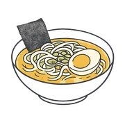
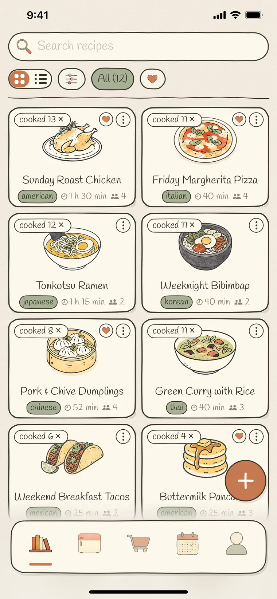
Free. All of it.
There is no Plus tier, no recipe limit, and no paywall waiting in the middle of a feature. What you install is the whole app.
No subscription
No monthly plan, no lifetime unlock, no in-app purchases. Sync, sharing, the planner and the scanner are simply part of it.
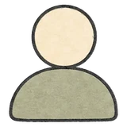
No account
No sign-up, no password, no email address. Open the app and start writing — you're already in.
No ads, no tracking
No advertising, no analytics, no newsletter, no data collected. There is nothing here that is selling you something.
It's free because it was made for one kitchen first, and then shared. Keep as many recipes as you like.
Adding a recipe
However the recipe arrives.
Typed out in your own words, pasted from a message, saved from a link, or photographed straight off a cookbook page, a recipe card or your own handwriting. Nombook reads it and fills in a draft.
Every import lands in a review screen first, so anything it got wrong you fix before it joins your cookbook. Photo scanning happens on your device — the pictures don't go anywhere.
- ✍️ Write it yourself
- 🔗 From a link
- 📋 Paste some text
- 📷 Scan a photo
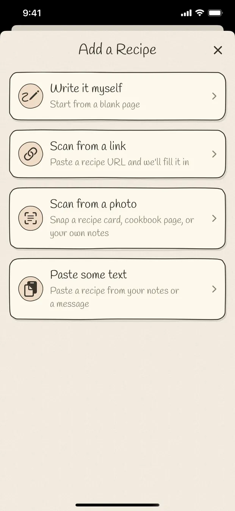
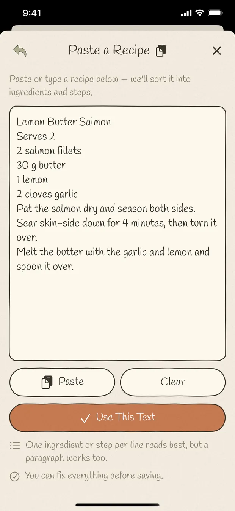
Your shelf
A cookbook that looks like yours.
Give a recipe your own photo — one tap lifts the dish off its background — or pick one of 110+ hand-drawn covers and plate it. Everything is drawn by hand, so the shelf looks like a book rather than a database.
Search it, filter by cuisine and dish type, star the ones you love, and gather the rest into lists of your own. Each card carries how many times you've made it.
- Search & filters
- Favourites
- Your own lists
- Cooked-count badges
At the stove
Made for the middle of cooking.
Cook mode shows one step at a time, big enough to read from across the counter, and keeps the screen awake so you're not waking your phone with a floury thumb.
Tick the ingredients before you start. Any step that needs a timer has one right in it — it keeps running while you move on, and tells you when the time is up, even if you've left the app.
- Screen stays on
- Timers in the step
- Tick off ingredients
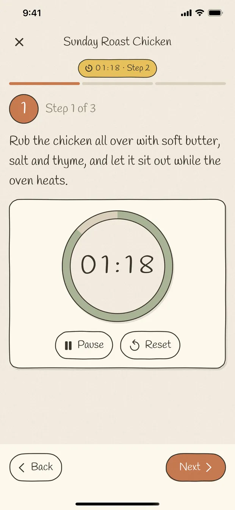
The diary
Every cook, remembered.
The useful part of a recipe is usually what happened after you saved it: the change you made, the photo from last time, the note that says ten more minutes in the oven.
Each time you cook, log it — half a star at a time, with a note and photos of how it came out. The history stays with the recipe, dated, so next time you can see exactly what you did.
- ★ Half-star ratings
- Notes & photos
- Dated history
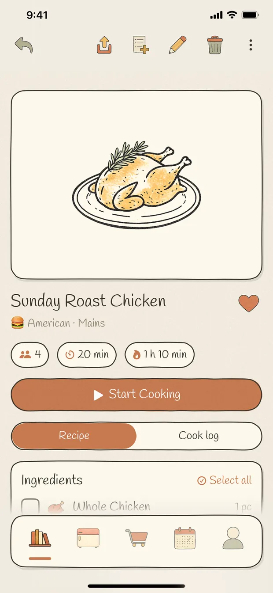
The week
Plan it. Then shop it.
Put dishes on a calendar and see the week, the month or a whole year of home cooking at a glance. Planning something you haven't written down yet is fine — type the name and it's on the day.
Send a recipe's ingredients to the grocery list — all of them, or only the ones you're missing. Items arrive grouped by aisle, and the same ingredient from two recipes is added together instead of listed twice.
- Week · month · year
- Grouped by aisle
- Duplicates merged
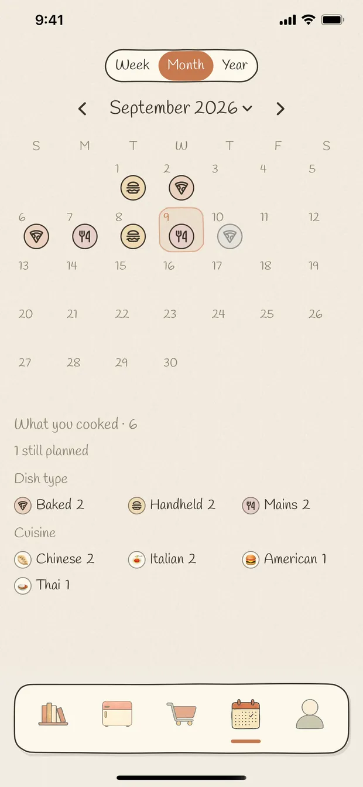
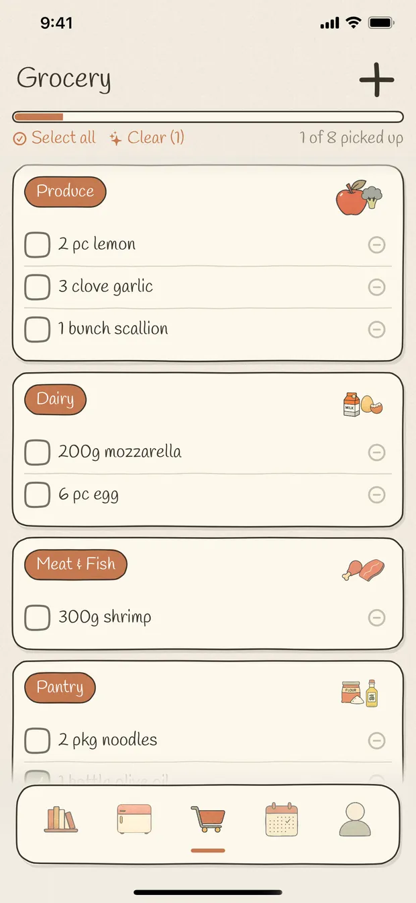
Tonight
Cook what's in the fridge.
Tap what you actually have — from 200+ hand-drawn ingredients, plus anything you've typed in yourself — and Nombook shows the recipes you can make with it, and which ingredient of yours each one uses.
It's the answer to the half past six question, asked of your own cookbook rather than the internet's.
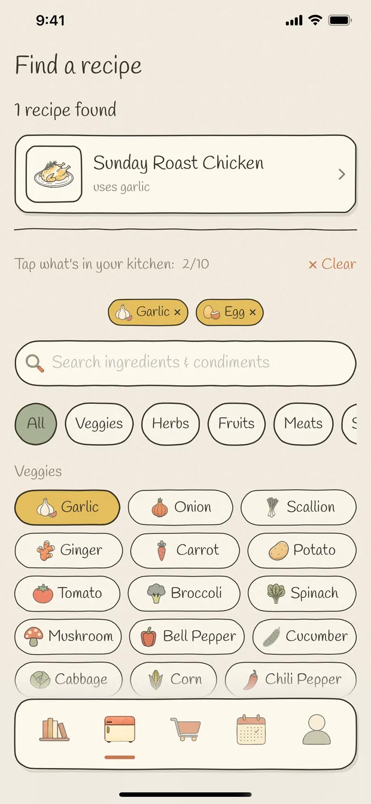
Sharing
Send a recipe to a friend.
Share a recipe as a link and whoever opens it in Nombook keeps their own copy — ingredients, steps, photos and all. It's theirs from that moment: their edits never touch yours, and yours never touch theirs.
Or share it as a picture. A recipe can be drawn as a full page, a notebook, a step board or a card; a whole list becomes a menu — fine dining, illustrated, cute or chalkboard — and that goes anywhere a picture goes.
- Send a link
- Recipe posters
- Menu layouts
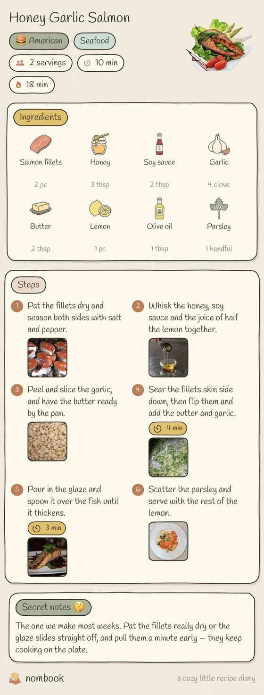
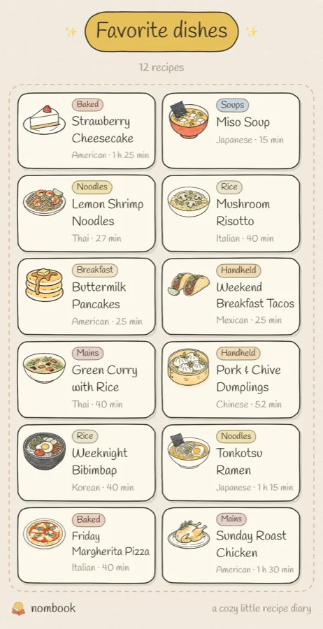
Looking back
A year of home cooking.
Your own page counts what you've kept, what you've cooked and what you've starred, and holds the lists you've made — weeknight dinners, things to bake, whatever you like.
The calendar keeps the rest: a month of small plates, a year ribbon, and a tally of which cuisines and which kinds of dish you actually made.
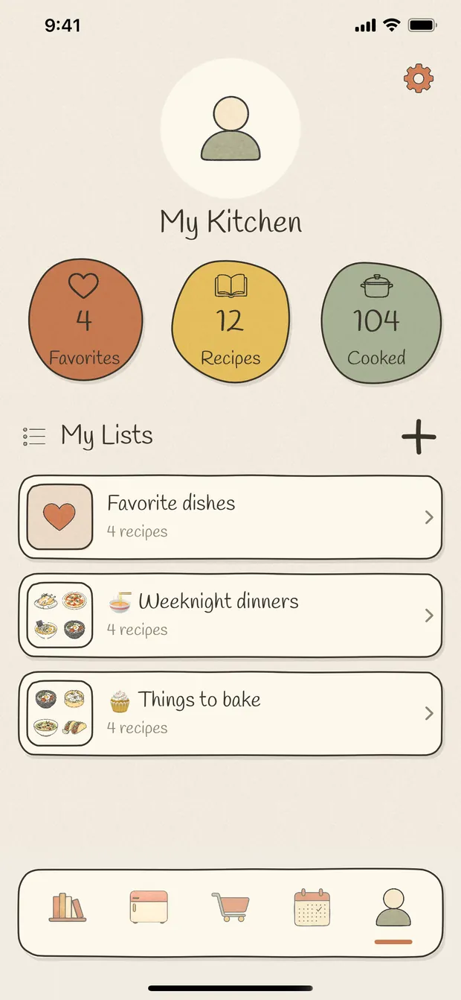
The whole list
Everything that's included.
Which is everything. There is no tier above this one.
Getting a recipe in
- Write a recipe in your own words
- Import from a recipe URL
- Save a page from the in-app browser
- Paste text from a message or your notes
- Scan a cookbook page, a recipe card or your own handwriting
- Several photos at once become one recipe
- Review and edit every import before it saves
- 110+ hand-drawn dish and drink covers
- Your own cover photo, background lifted off in one tap
- 200+ hand-drawn ingredients
- Cuisine, dish type, servings, prep and cook time, calories
- Secret notes on any recipe
Cooking and remembering
- Full-screen cook mode, one step at a time
- The screen stays awake while you cook
- A timer on any step, running in the background
- Tick off ingredients as you go
- Half-star ratings, out of five
- A note and photos every time you cook it
- Dated cooking history on every recipe
- Cooked-count badges on the shelf
- A month of small plates, and a whole year
- A tally of the cuisines and dish types you actually made
Planning, finding, sharing
- Meal planner — week, month and year
- Plan a dish by typing its name
- Grocery list grouped by aisle
- The same ingredient from two recipes added together
- Find recipes from what's in the fridge
- Search by recipe or by ingredient
- Cuisine, dish type, favourite and cooked filters
- Recipe lists you make yourself
- Send a recipe as a link — they keep their own copy
- Four recipe poster layouts, five menu layouts
- iCloud sync across your own devices
- English, 简体中文, 繁體中文, 日本語, 한국어, Español, Français
Drawn, not stock
Every picture in here was drawn by hand.
The covers, the ingredients, the tab bar, the little plate on a planned day. If you never take a photo of your food, your cookbook still looks like something.
- 110+hand-drawn covers
- 200+ingredient drawings
- 7languages
- 0ads, fees and accounts
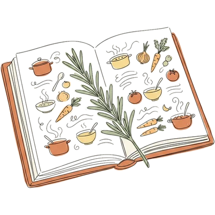
Private by default
Yours, on your devices, and nobody else's.
There is no Nombook server and no Nombook account. Your cookbook lives on your iPhone, and — with iCloud Sync left on — in your private iCloud, which we cannot read. One Apple Account opens the same recipes on every device you sign into.
Turn sync off and everything still works, kept on the device. Nothing is collected, nothing is analysed, nothing is sold.
Being clear about it
What Nombook isn't.
It's a cookbook and a diary for the food you cook. It is deliberately not several other things:
- Not a recipe discovery feed. There is no endless scroll of other people's dinners, and nothing is recommended to you.
- Not a social network. No profiles, no followers, no likes. The only thing you can send anybody is one recipe, on purpose.
- Not ad-supported. Nothing on any screen is sold, and there is no analytics SDK deciding what to show you.
If what you want is somewhere to keep the twelve things you really make, and to remember how the last one went, that's the whole idea.
Questions people ask
And if yours isn't here, write to us — a person reads it.
Is Nombook really free?
Yes — the whole app. There are no subscriptions, no in-app purchases, no limit on how many recipes you keep, and no feature held back behind an unlock. No ads either.
Do I need an account?
No. There is no sign-up, no password and no email address to hand over. Open the app and start writing.
Where are my recipes kept?
On your iPhone, in Nombook's own storage. With iCloud Sync on they are also in your private iCloud database, so your devices stay in step. There is no Nombook server — your cookbook is never sent to us.
Will my recipes sync between my devices?
Yes. Devices signed in to the same Apple Account share one cookbook, photos included. The iCloud Sync page in the app shows you whether it's working and what has reached iCloud.
Can I import a recipe from a website?
Paste the address, or browse to the page in the app and tap Use This Page. Nombook reads the page and fills in a draft that you check before saving. You can also scan a photo of a cookbook page, a recipe card or your own handwriting — several pages at once come out as one recipe, and the reading happens on your device.
Can I share a recipe with someone who doesn't have the app?
Share it as a picture — a poster or a menu — and that goes anywhere. A shared link needs Nombook to open it, and whoever opens it keeps their own independent copy: their edits never change yours.
Is there an Android version, or a website I can use?
Not today. Nombook is an iPhone app — it installs on an iPad and runs there the way iPhone apps do, but it's designed for the phone. It's built on Apple's own frameworks and on iCloud, which is a lot of why there's no account to make and nothing to pay for.
What happens if I delete the app?
The copy on that iPhone goes, local photos included. If iCloud Sync was on, reinstalling under the same Apple Account downloads the cookbook again. If it was off, you'd need a device backup.
Why is it free? What's the catch?
There isn't one. Nombook was built for one kitchen first and then shared, and it has no running costs to cover: there is no Nombook server, because your cookbook lives on your phone and syncs through your own iCloud. Nothing about you is collected, so there is nothing to sell either.
Does it work without an internet connection?
Yes. Writing, cooking, timers, planning, the grocery list and your whole cookbook work offline — it's all on the phone. Only three things need a connection: importing a recipe from a web page, syncing with iCloud, and sharing a link.
Can I organise my recipes into collections?
Make as many lists as you like — weeknight dinners, things to bake, whatever you want — give each one a cover and a sticker, and put a recipe in more than one. There's a favourites heart as well, and filters for cuisine, dish type, and whether you've actually cooked it yet. You can search by recipe name or by an ingredient.
Which languages does it speak?
English, 简体中文, 繁體中文, 日本語, 한국어, Español and Français — the whole app, including the ingredient names and the units. By default it follows your phone.
What do I need to run it?
An iPhone running iOS 17 or later. iCloud sync is optional; with it switched off everything still works, kept on the device.
Start your cookbook tonight.
Write down the thing you already know how to make. That's the first page.
Free · No account · iPhone, iOS 17 or later